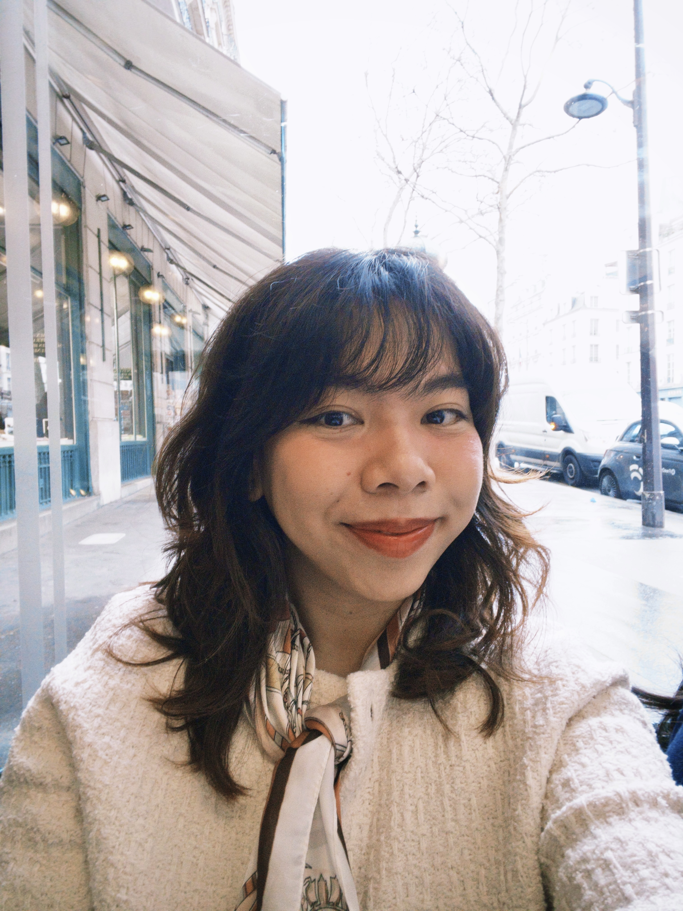

Guten Tag!
Welcome to my portfolio.
My name is Giang Do /zang doe/. If I have to describe myself in one word, it would be curiosity. I started my career as an art director and animator, then followed my instinct toward the question I couldn't stop asking: why do people struggle with things that should just work? That question turned me into a UX designer.
I'm based in Germany and work fully in German at IVU Traffic Technologies in Aachen, where I contribute to transit software products and a company-wide Figma design system. Before Germany, I lived and worked in Singapore and Vietnam. I'm currently finishing my Master's in Usability Engineering — which, honestly, has only made me more curious about how people and interfaces interact with each other.